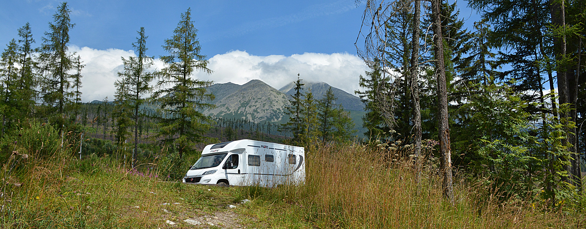
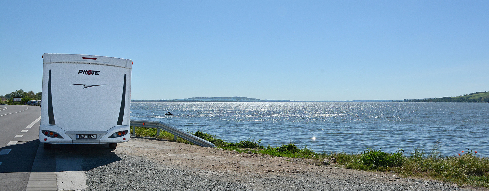
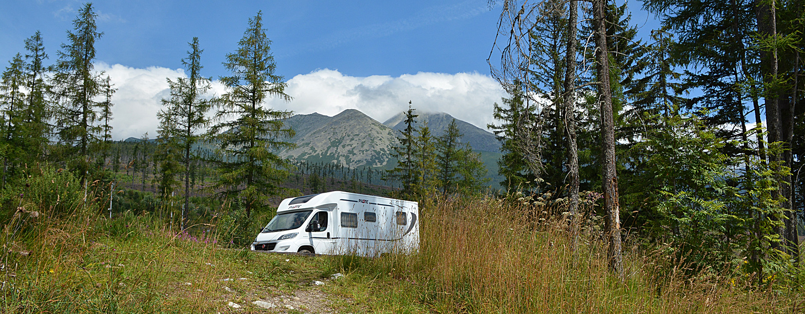
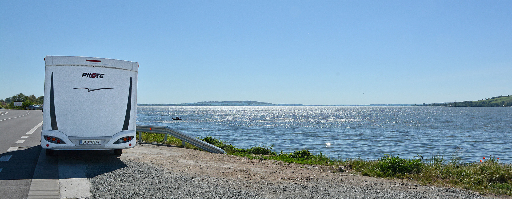
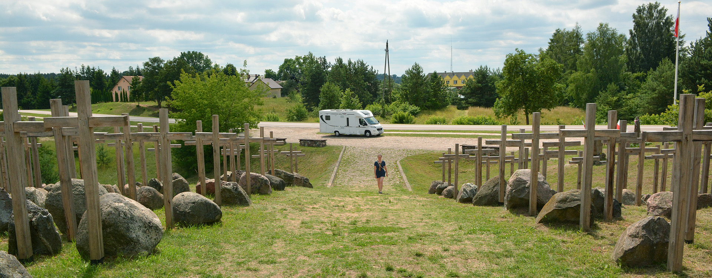
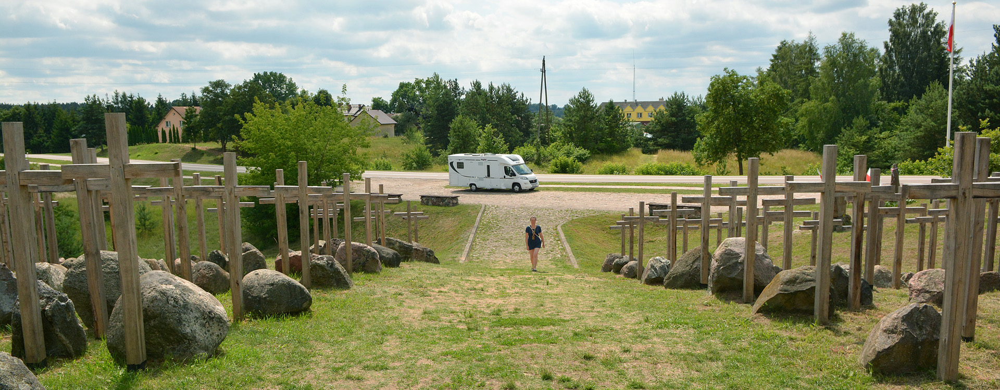
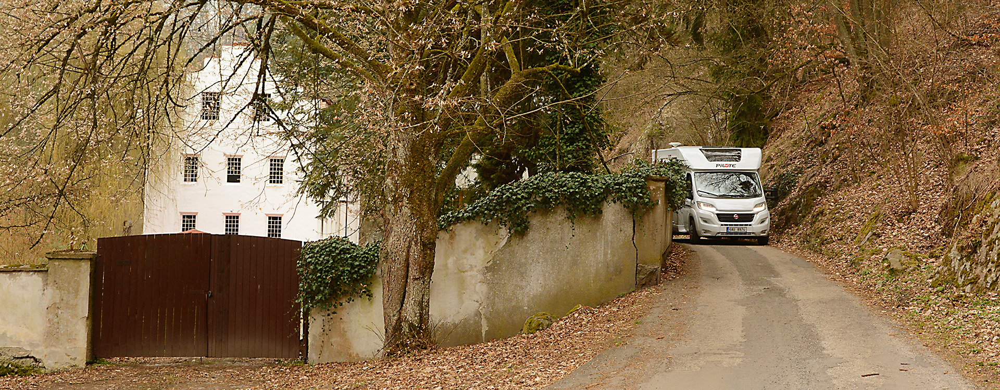
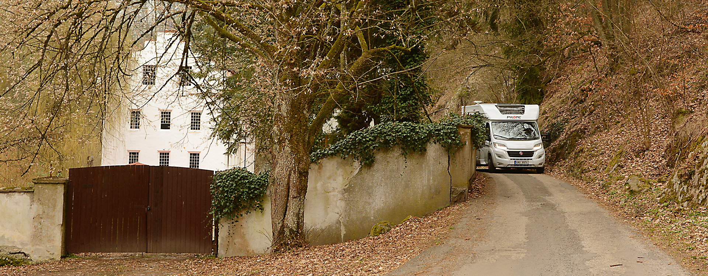

 



 



20.05.2018 - Hodnocení po prvních 5000 km.
Před třemi dny tomu byly přesně 2 měsíce, kdy jsme si Dodíka (tehdy ještě Mazlíka) odvezli domů. Bylo to fungl nové holátko, přímo z výroby. Hned následující víkend jsme jeli do Holandska, Belgie a Německa a pak v podstatě každý víkend jezdíme na různé výlety. No a najednou máme na tachometru prvních 5000 km. A tak jsem si řekl, že je možná první dobrá příležitost trochu Dodíka představit, okomentovat, co nám která jeho součást připravila za překvapení (dobré či méně dobré), co jak řešíme a co ještě plánujeme. A budu to brát postupně odpředu, od kabiny řidiče směrem dozadu.
Robotizovaná převodovka - každou jízdu, každý kilometr, jsem šťastný za rozhodnutí si ji objednat. Komukoliv, kdo stojí před tímto dilematem, mohu jen říct: pokud je alespoň trochu finančně možné do toho jít, udělejte to. I kdybych měl oželet zatím něco, co se dá dodělat potom. Pokud je pro někoho cestování obytňákem synonymem pro pohodovou jízdu, není naprosto co řešit. Při rozjíždění do kopce lepší než s manuálem, při jízdě z prudkého kopce hezky brzdí motorem, zpoždění při přeřazení není nic hrozného a za těch 5000km jsem se postupně dostal na spotřebu okolo 10l/100km. Spíš i pod ní.
{kind=link}
Bez stále spuštěné zpětné kamery na levém displeji bych asi už nechtěl být. Je to opravdu plnohodnotná náhrada zpětného zrcátka. Volant: počítám už dny do chvíle, kdy mi obšijí volant kůží. Tenhle plasťák, který v základu auto mělo, je prostě hrůza.
{kind=link}
Navigace Garmin Camper 770 je přemístěna z okna, kde byla původně "přicucnuta", na palubku. Je tak lépe v dosahu. Jak navigace, tak čelní on-board kamerka, mají skrytě proveden přívod napájení. Nemám moc rád všude se válející kabely. Večer jen sejmu magneticky přichycenou čelní kamerku a můžu zatáhnout žaluzie. Nic jejich pohybu nepřekáží. Původně jsem používal i Fiatem montovaný středový vyklápěcí panel na uchychení 10" tabletu. Docela to fungovalo a je to rozhodně řešení, které má logiku. Nicméně časem mi začalo vadit, že v zorném poli mám takovou velkou "pyramidu". A tak jsem to zrušil. jako náhrada časem přibude i 2DIN autorádio. To originálně dodané rádio Pioneer není rozhodně špatné ale možnost pustit si film je pro mě důležitým faktorem. Hlavně na dlouhé jízdy. Mimochodem, nabíjení přes USB na palubní desce je zoufale pomalé. Tam by to chtělo nabíječku s větším nabíjecím proudem.
Koberec v přední kabině - Určitým vývojem prošlo i rozdělení auta. Které prostory budou jako že "špinavé" a může se tam v botách, no a které budou "čisté", tedy na bosou nohu a domácí pantofle. Samozřejmě je to hodně o zvyklostech té které cestující rodiny a taky o možnostech. Tak jak jsme si to zavedli teď my, by bylo ještě před pár lety (kdy jsme jezdili s našimi dcerami coby malými dětmi) naprosto nemyslitelné.
Nejdříve jsme tedy používali oboje přední dveře, jako v běžném autě. Bylo to hned na začátku našeho cestování, kdy byla ještě zima, bláto, občas sníh a tak nutně to vpředu vypadalo jako v běžném autě. Časem jsme zjistili, že chceme mít "doma" přeci jen čisto a není dost dobře možné, aby to "čisto" začínalo někde uprostřed obytného prostoru. A tak bylo celé auto vyhlášeno za čistou zónu a jediné "špinavé" místo je první schod vstupních dveří do obytné části. A aby to bylo naprosto jasné, koberec, který máme teď v přední kabině (i v ložnici a bude postupně všude), je hodně světlý.
{kind=link}
Dveře přední kabiny už vůbec nepoužíváme a časem na ně namontuji vnitřní zámky Heosafe, které krásně pasují do dveří, bez nějakých zvláštních úprav. Pedály plynu a brzdy jsou naprosto čisté, myl jsem je i lihem :-) a tak někdy řídím bos, někdy v pantoflích. A když zastavím a musím ven, jdu dozadu, nakopnu venkovní boty a žádné velké zdržení nebo komplikaci to nepřináší. No a pří jízdě máme spíš pocit, že jsme v obýváku a ne v autě. Navíc večer, když sedím na otočené sedačce řidiče, je měkký koberec pod nohama velmi příjemná záležitost.
Sezení v obytné části - tady jen jedna fotka, jak nyní vypadá. Stále čekáme, až z Fracie dorazí původně objednané sezení do L, se středovým posuvným stolem. A tak tohle "účkové" provedení u nás nebude navěky. Nicméně současné zkušenosti z Účkem hovoří jasně - toto je ideální sezení pro čtveřici cestovatelů, zvláště, když dva z nich jsou děti.
{kind=link}
Stůl přimontovaný ke zdi určitě nabídne víc prostoru pro případné hry za jízdy a jeho upevnění na třech bodech přináší i větší stabilitu. Když ale vysunete rozšiřující díl, tak už se nikdo nikam nepohne. Díl hodně překáží vlastně v jakékoliv své poloze. Dalšího místa na stole ale poskytne opravdu o poznání víc, to ano. Takže se opět vracíme k výhodám pro vícečlennou posádku. My dva nomádi se ale už těšíme, až nám z J.M.Trade zavolají, že "naše" sezení je tady. Rádi přijedeme na výměnu. Na téma rozdílné sezení do "U" a do "L" jsem už napsal dva články, ten novější je třeba ZDE.
Umístění televizoru - opět jen slova chvály: umístění na zeď naproti sedacímu koutu je výborné. Odevšad je krásně vidět, televizor je docela velký (24"), je pevný, bez pazvuků za jízdy a nezabírá víc místa, než je nezbytně nutné. První týdny jsme pořád někde ztráceli dálkový ovladač. Dali jsme ho vždy na jiné místo, aby za jízdy nespadl a pak nikdo nevěděl, kam ho ten druhý dal. Věc vyřešilo textilní pouzdro na zahradní nůžky, prodávané v OBI. Přirouboval jsem ho do poličky nad sedadlo spolujedce a od té doby pohoda.
{kind=link}
Finlux 24FDM5660 je slušný stroj, který funguje, jak má. Z připojeného pevného disku přehraje drtivou většinu formátů (vč.Full HD) a po připojení na internet přes telefon a jeho hotspot, se třeba na zprávy mohu podívat kdekoliv v EU. Jediné co vadí je, že když je dole horní postel, tak TV na stěně vyčuhuje asi 15cm nad matraci. Nocležník by ji tedy mohl nohama prokopnout a tak by musel ležet obráceně. A čtecí lampičky jsou ale samozřejmě na druhé straně. Ale pro nás to problém zatím není, my jezdíme ve dvou.
Botník - co se konstruktérům od Pilote fakt povedlo, je botník. tvoří ho vlastně celý spodek sedačky vedle dveří a tak je nejenom skvěle umístěn ale je i hodně, ale fakt hodně velký. Proto jsme mohli celé auto vyhlásit za čistou zónu: otevřu dveře, vystoupím na schůdek Thule nebo na první schod auta, zuji se, boty dám do botníku bočními dvířky, udělám další krok a jsem "doma". Do botníku je navíc i výborný přístup shora po odklopení sedačky. Úklid prostoru je tedy hračka. Navíc do něj ústí i horkovzdušné topení. Mokré boty v botníku rychle vyschnou - ověřeno. Přihrádka ve dveřích je asi koncipována na umístění pantoflí. Jako daleko praktičtější se nám ale jeví tam zastrčit smětáček s lopatkou. Udržet vstupní část do auta čistou je pak dílem vteřiny a to kdykoliv.

Pozn.: asi to bude u všech aut stejné ale velmi si ceníme jedné funkce elektricky výsuvného schůdku Thule: když nastartuji motor a on je vysunut, automaticky zajede zpět. Kolikrát já už bych na něj při odjezdu zapomněl !
Kuchyňský kout - Kuchyně Pilote je velmi dobře řešená a nemáme k ní žádných připomínek. Pracovní deska je (znovu opakuji) asi největší na trhu, zásuvek je dost, jsou hluboké a mají funkci měkkého dovírání, dřez je dostatečně velký a hluboký. Klasický tříplotýnkový vařič Dometic je vzadu a nijak nepřekáží při běžných činnostech. Původně jsme objednávali i digestoř. Jak kvůli odsávání par, tak kvůli přímému osvětlení kuchyňské desky. Objednávka se tehdy "ztratila" ale vlastně nám vůbec nechybí. Nevaříme tolik, abychom nějak bojovali s párou a osvětlení kuchyně je i tak více než dostatečné. Takže odsavač par už chtít nebudeme.
Největší zásuvka, která je koncipována na odpadkový koš, nám krásně rozměrově sedla pro dva běžné koše z Ikea. Sedí tam napevno a nebylo je třeba nijak fixovat.
{kind=link}
Původně jsme chtěli jeden na běžné odpadky a druhý na plasty ale teď je druhý koš vyhrazen na úklidové prostředky. Takže asi koupíme ještě třetí, stejně tam máme jednu čtvrtinu zásuvky volnou.
{kind=link}
O umístění konve a kávovaru jsem psal v minulém článku. Na levé stěně kuchyňského koutu se našlo místo na 4 vinné sklenky (tedy 2x 2druhy). Plastové úchytky jsou perfektní. Drží velmi dobře, skleničky se ani nehnou a to máme poctivé sklo. Myslím, že na víno používat ty plastové, co se dají v karavan obchodech sehnat, to je něco mezi barbarstvím a svatokrádeží. Takže sklo. Zatím bez problémů. Malá polička na stěně perfektně a natěsno pojmě 4 kovové čajové krabičky firmy Twinings. Cukr a čaje tak máme hned po ruce, nechrastí za jízdy a docela i dobře vypadají.
Kávovar u Krupsů snad museli vyvíjet ve spolupráci s Pilote pro potřeby obytných aut. Když spustíme hormí postel do nejnižší polohy, sedí to takto:
{kind=link}
Tedy naprosto přesně. Zbývá tam asi 1,5cm místa.
Nádobí a kuchyňská výbava - loni v září jsem psal článek o melaminovém nádobí. Protože jsme v autě většinově jen dva, můžeme si hmotnostně dovolit používat běžné porcelánové talíře, hrnky, skleničky, apod. A to jsou věci těžší ale hlavně rozbitné a při dotyku mezi sebou zvuky vydávající. To mi bylo jasné ještě dříve, než auto dorazilo a tak jsem předem kupoval textilní oddělovací podložky, měkké obaly na lahve a hrnky, koupil jsem i takovou tu ukládací podložku na hrnky a sklenice. No a co říká praxe?
Třeba právě ten držák sklenic za 370kč na fotkách ve webových prodejnách vypadal výborně a prakticky. Proto jsem ho koupil. První poznatek: rozměrově perfektně sedí do většiny šuplíků i skříněk. Druhý poznatek - je k ničemu. Tedy nám. Asi by byl funkční, kdybyste koupili přesně ty sklenice a hrnky z obrázku. My jsme doma uspořádali logistické cvičení s cílem najít takové hrnky a skleničky, které by těch 3x5 děr co nejlépe zaplnily. Tak nějak se to povedlo, díry byly plné a přišel čas celým setem trochu zatřást - jéžiši to byly hrozné zvuky! Ty díry jsou prostě blízko u sebe a tak na sklo a porcelán je držák nepoužitelný. A vkládat mezi jednotlivé kusy ještě nějaké měkké pásky, no to je zbytečná pakárna. A navíc, pro umístění do šuplíku je držák nepoužitelný - skoro všechny hrnky a skleničky jsou vyšší nežli šuplík sám. A tak jsme ho dali do horní skříňky, používám každou druhou díru. Nic moc za 370 Kč. Jo to dělící textilní podložky/oddělovačky, tak ty se nám osvědčily jako velmi univerzální a skvělé. Už ani nevím, kolik jich máme ale používáme je mezi talíře, mezi hrnce, misky, prostě všude.
{kind=link}
Porcelánové hrnky nakonec ukládáme do šuplíku, do obyčejné plastové mísy, vždy s nataženou ochranou punčochou, které se dají také běžně koupit a jsou docela dobré. Dlouho tedy nevydrží, postupně je budete trhat víc a víc ale nestojí moc a pro třeba stojící lahve do chladničky nebo právě pro ochranu uložených hrníčků, jsou dobré.
Bar a vinotéka - V článku o instalaci televizoru jsem psal o prostoru, který výrobce původně navrhnul pro televizor a proč jsme ho nevyužili. Udělali jsme dobře nejenom proto, že televizor je teď na lepším místě, ale i proto, že jsme získali bar a vinotéku zároveň. Prostor se po demontáži TV držáku stal ideálním místem pro uložení pár lahviček něčeho dobrého.
{kind=link}
Je dost široký, hluboký i vysoký, aby pojmul tak 8-10 lahví postavených na výšku. Zatím jsem tam provizorně z kartonů slepil krabici na 6 oddělených lahví a testuji. Skříňka nad mrazákem je ideální na uložení potravin a tak ještě vymýšlím, jak prostor skříňky využít co nejlépe. Určitě ale přidám ještě poličku nad láhve - toho prostoru je škoda. Kdo by ale chtěl na stejné místo dávat velké PETky, tak prostor je v pohodě pojme. Balení 6x 1,5l vod nebo minerálek tam pasuje skvěle. My tam ale necháme vína a destiláty. Jen vyrobím pevnější box, který využije celou hloubku poličky. Místo pro tak 10 lahví tedy máme :-).
Koupelna - s velkou dávkou hrdosti píši "koupelna" a ne "sprcha" a "WC". Dva samostatné prostory na levé a pravé straně auta, ulička mezi a dvoje dveře, které celý prostor mohou spojit a oddělit od ostatního, dává právo mluvit o koupelně. Je to praktické uspořádání, které využíváme každý den. Tedy, není to kvůli studu ale kvůli vlhkosti. Zasouvací dveře do ložnice v případě sprchování znemožní, aby se pára dostala tam, kde ji nechce mít, tedy do ložnice a hromady textilií.
{kind=link}
Samotné prostory sprchy a WC s umyvadlem jsou bez připomínek. Jednokřídlé dveře do sprchy fungují výborně, ven nikdy nic nevyteče. Odkládacích prostor i věšáků je dost. Umyvadlo je docela obstojně velké. Velmi se nám osvědčily instalované držáky na mýdlo a kartáčky na zuby. Velká, ale snad napravitelná chyba je, že odtok pod umyvadlem má dva ohyby, s úhly 90st nebo možná i méně. Zřejmě nedbalost při výrobě znamená, že nám voda z umyvadla odtéká zoooooufale pomalu. Takže až pojedu na výměnu sedačky, nechám odtok vytvarovat s větším sklonem, který teď nemá. Pak nás také zpočátku štvalo, že jsme všude stále nacházeli plastové kryty spojů. Takové ty kulaté záslepky, co schovávají šrouby a další spoje panelů stěn a nábytku. Při jízdě prostě odevšad vypadávaly. Postupně jsem je vždy kapkou lepidla přichytil a teď už je to v pořádku. A poslední drobností je držák toaletníko papíru. Toto provedení sice vypadá dobře ale pokud není role plná a nepřiléhá proto na stěnu, tak se při jízdě otáčí a po zastavení nakouknete do koupelny, a na zemi leží 2m vytočeného papíru.
{kind=link}
Ohledně chemického záchodu jeden poznatek: karavanisti se dělí do dvou skupin: na ty, co už mají instalovaný SOG a na ty, kteří si ho teprve pořídí. Nikdo jiný není. S tímto poměrně novým zařízením prostě máme jen ty nejlepší zkušenosti. A zbývá podotknout, že záchod využíváme "naplno" a stejně nevíme, co je zápach.
Zní to sice blbě ale "z koupelny se jde i do sklepa". Prostě v uličce je dekl do úložného prostoru pod podlahou. Ten je docela velký a tak pojmul jak zabudovaný trezor, tak poskytuje i slušný prostor pro lahve s pitím. A nebudete věřit, jak je to umístěno vlastně pod autem, stále ve stínu, tak se jedná o nejchladnější místo v obytňáku. Prostě sklep. Na 10 PET lahví a 6 krabic džusů.
{kind=link}
Ložnice - Dodo je první auto, které jsme měli možnost vyzkoušet se středovou postelí ("queensbed"). Ta půjčená z předchozích cest měla většinou klasiku vzadu napříč, nebo "francouzskou", po jedné straně a vedle ní koupelnu. Samozřejmě chápu, že se tímto layoutem zmenšuje prostor garáže ale proboha - vždyť pak už jsou jenom samé výhody! Tak proč se tak málo prodávají ? Ale asi je to hlavně tím, že v autě s menší délkou než je našich 7,5m ,se prostě ztratí ta výhoda možnosti obcházet postel z obou stran. A středová postel v provedení francouzský PILOTE byl dalším z hlavních důvodů, proč jsme se při koupi Dodíka rozhodli právě pro tohoto, u nás ne moc rozšířeného, výrobce. Je jím i úložný prostor pod postelí. Začnu ale ložnicí jako takovou.
{kind=link}
Středové uspořádání se nám prostě jeví nejenom jako pěkné, ale pro naše potřeby i praktické. Postel je nízko, nelezu do ní jak na posed, když jeden v noci nebo ráno vstává, nemusí přelézat toho druhého, každý máme svůj "noční stolek" na drobnosti. Je to prostě plnohodnotná ložnice, i když nevelká. Postel má velmi slušné rozměry 190x150cm a tak se oba pohodlně vyspíme. Přední rohy lůžka jsou zakulaceny. Toho jsem se trochu obával, v noci by tak mohla sklouzávat peřina ale je to v pohodě. Roh deky si prostě ohnu pod sebe a spím jak mimino. Do ložnice jsme nechali udělat koberec, stejný jako je v přední kabině. Janáčkovi (www.bydlikemevropou.com) nám říkali, že dříve či později oceníme výhody koberce v obytňáku. Měli samozřejmě pravdu.
{kind=link}
Skříňky po straně postele i nad ní jsou dost prostorné pro obleční dvou lidí. Trochu jsme bojovali s ramínky - za jízdy nám padaly ze šatní tyče. Ale vyměnili jsme typ ramínek, dáváme je tam zásadně hákem dozadu a už je všechno v pořádku. Vlastní postel má v čele dvě docela velké zásuvky, tedy s rychlým přístupem. Postel má bytelný kovový rám, s lamelovými rošty a matrací. Celé je to na plynových výsuvech, takže zvednout celou postel i s peřinami zvládne i moje žena a to jednou rukou.
{kind=link}
Prostor pod postelí je rozdělen na takových 5 částí. Vzadu je velká plocha, vysoká tak 10cm. Vejde se tam hromada plochých věcí (vyfouknuté čluny, deky, atd.). Před ní je 150cm široký a dost hluboký prostor, kryjící nádrž na vodu. Šikovné jsou oba trojúhelníkové prostory po stranách. Jsou dost hluboké a tak pojmou všechno možné. My máme v jednom batohy a kabely, do druhého dáváme špinavé prádlo. Prostoru pod postelí je tedy opravdu hodně.
No a tím se dostávám k největší slabině našeho Doda, který nese tovární označení PILOTE P746C a tím je přístup k nádrži na čistou vodu. Máme k dispozici nádrž na 130 litrů ale je umístěna pod podlahu naší ložnice. Mimochodem, všechny nádrže jsou vyhřívané takže v zimě problém není. Ten je s přístupem pro případné čištění nádrže.
{kind=link}
Když odklopím a vyjmu dno toho podélného prostoru, tak mohu vídět, že k podlaze je ještě tak 20cm (vedou tam rozvody tepla) a až pak je díra a pod ní nádrž. Na fotografii je ostraněn šroubovací kryt, takže je vidět až do nádrže a ta světlá tečka je otevřená výpusť. Prostě - nemáte šanci se dostat k nádrži a nějakým mechanickým způsobem ji zevnitř vyčistit. Jsem tedy do budoucna odkázán jen na chemické čištění, jiný způsob mě zatím nenapadá. Jsme zaměstnaní lidé a tak jezdíme hlavně o víkendech. Postupně jsem si zavedl takový rituál. Když se vracíme z výletu k domovu, otevřu odtok odpadní nádrže (musí být prázdná - její obsah vypouštím na těch správných místech), pak za jízdy pustím vodu do dřezu v kuchyni i do umyvadla v koupelně. Tak se zbavím přebytečné vody a zároveň čistou vodou proplachuji odpadní trubky i nádrž. Doma zapnu vodní čerpadlo, resp. aktivuji protimrazovou pojistku a čerpadlo vyžene vodu z trubek a ostatních částí. Pak otevřu kryt nádrže na obrázku, vyndám houbičku aktivního stříbra a vytáhnu špunt na dně nádrže. Vyteče posledních pár kapek. A takto otevřené to nechám do dalšího výletu. Většinou nádrž zcela vyschne a tak se v ní netvoří žádné potvornosti. V pátek před napuštěním jen otvorem do nádrže vytříkám trochou čisté vody, někdy s kapkou Sava, všechno zavřu a natankuji pitnou vodu. Její kvalita je zatím velmi dobrá, i když ji samozřejmě přímo z kohoutku už pro jistotu nepijeme. V případě krize si ale myslím, že bychom stále mohli. Tak to je z našeho pohledu jediný vážnější konstrukční nedostatek našeho auta.
Garáž - Hned po převzetí jsem na stranu řidiče do garáže namontoval úložný systém (článek z 28.3.) a stále nás toto řešení přesvědčuje o svých výhodách. Ve skříňce jsou naházeny kabely, redukce, mám tam najížďěcí klíny, hadici od kompresoru měchů, atd. atd. Původně jsem myslel, že elektrický kabel budu tahat každý večer a že umístění do skříňky je proto až moc vzadu ale stali se z nás skoro 100% divočáci, v kempu jsme byli na 2 noci a o moc víc jich zřejmě nebude. Kabel tedy tahám jen mimořádně, takže jeho umístění ve skříňce je v pohodě.
{kind=link}
Tři šuplíky naopak používám dost často. Ve spodním je nářadí, v prostředním "materiál" (lepicí pásky, suché zipy, drátky, gumy, atd.). Třetí šuplík vidíte na fotce a je jasné, co v něm vozíme. Původní závlačky, kterými jsem zásuvky fixoval proti otevření jsem už zahodil. Furt jsem je někde hledal. Nakonec asi nechám jednoduché, provizorní ale vysoce funkční řešení: obyčejný měděný drát v bužírce, který vede zeshora dolů dírkami po závlačkách. Jeden pohyb a vše je zablokované proti otevření. Hadice na vodu (článek 30.1.) v plastové potravinářské přepravce je taky v pohodě. Natankuji vodu do nádrže auta, hadici stočím, hodím do přepravky, přetáhnu jedním krátkým gumicukem a hotovo. Pár kapek, co z hadice vyteče, přepravka zadrží a nikde tak nemám mokro. Ještě musím někam upevnit konev na vodu a kbelík, které mám stále doma. Do prázdninové velké cesty do Pobaltí to snad stihnu.
{kind=link}
Druhá strana zatím hotová není. Kempingový nábytek vozíme naházený na podlaze, podložený kusem koberce a zafixovaný gumicuky. Není to prostorově optimální řešení a tak je v plánu křesla a stolky postavit (otočit od 90st) a uchytit to celé za levou stěnu. Vznikne spousta prostoru na bágáž, zásoby a skládací kola. Růžici sprchy v garáži jsem podložil měkkou podložkou, přilepenou na zeď. Nebudete věřit ale před tím bylo ťukání růžice o stěnu slyšet při jízdě až dopředu do kabiny.

A to už je snad opravdu vše. Monentálně se zabývám tím, že postupně "vychytávám" všechny zvuky a pazvuky, které auto při jízdě vydává. Třeba přední postel pod stropem vydávala za jízdy nepříjemné vrzání a klepání. Ale už to ani zdaleka není takové, jako to bylo na začátku, když jsme do Dodíka nanosili všechny věci, jen tak nahodile je uložili a vyjeli. Auto samo o sobě je vcelku v pohodě ale ta výbava ! To byl (a asi ještě chvilku bude) běh na delší trať, však to znáte.
A moje závěrečné hodnocení - zatím jsme velmi spokojeni. S firmou Pilote, s modelem P746C ale hlavně s naším rozhodnutím si koupit nové auto. Vývoj kráčí mílovými kroky a proti těm obytňákům, co jsme poznali z půčoven, jsme někde zcela jinde. A díky pečlivému výběru (však to také trvalo!) jsme zvolili i provedení a velikost, které pro naše podmínky perfektně sedí.